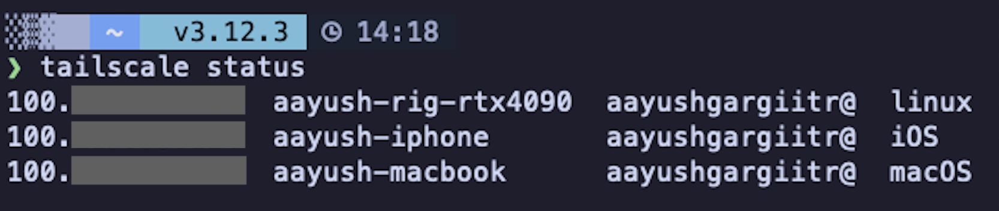
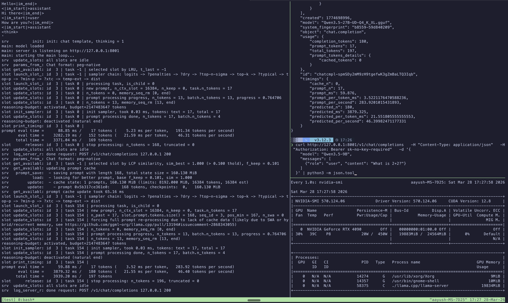
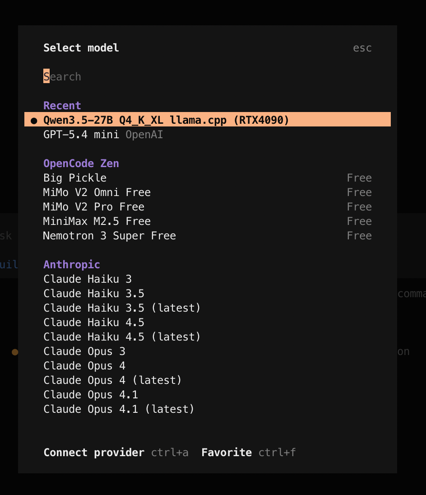
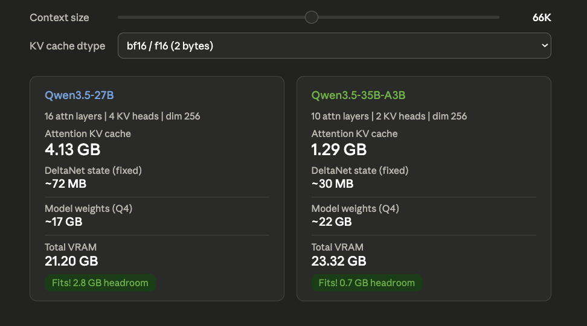

Using a local LLM in OpenCode with llama.cpp
This post covers the full setup for running a local LLM (Qwen3.5-27B) with llama.cpp and using it as an OpenCode provider.
I have focused a lot on actually getting it to work well with an agentic coding tools like OpenCode/Codex. When you try to do that there are a bunch of choices and gotchas you run into like, which model variant, which quantization, why the chat template breaks with tool-calling, how much context you can actually fit on your GPU, and so on. I have made sure to include all of these so that whether you have a similar setup to mine or a different one, you can go ahead and set it up.
My setup is an RTX 4090 workstation running the model, my personal Macbook as the client and Tailscale connecting the two.
If you already know how to set up a local model and use it with OpenCode, I would recommend skipping to Reasoning and things I learned along the way, there might be something new you can pick up.
Step 1: Build llama.cpp on your GPU machine
sudo apt-get update
sudo apt-get install pciutils build-essential cmake curl libcurl4-openssl-dev -y
git clone https://github.com/ggml-org/llama.cpp
cmake llama.cpp -B llama.cpp/build \
-DBUILD_SHARED_LIBS=OFF -DGGML_CUDA=ON
cmake --build llama.cpp/build --config Release -j4 \
--clean-first \
--target llama-cli llama-mtmd-cli llama-server llama-gguf-splitUse -j4/-j2/-j8 instead of -j to limit parallel jobs and avoid OOM errors during compilation.
Step 2: Install Tailscale on both machines
If you are running everything on the same machine, you can skip this and just use
127.0.0.1.
On the GPU machine (RTX 4090)
# Install Tailscale
curl -fsSL https://tailscale.com/install.sh | sh
# Start with SSH enabled and authenticate
sudo tailscale up --ssh
# Enable on boot
sudo systemctl enable tailscaled
# Check your IP and hostname
tailscale statusOn your MacBook
# Install via Homebrew (or get it from the Mac App Store)
brew install --cask tailscale
# Open the app, log in from the menu bar icon, then:
sudo tailscale up --sshIf everything worked, you should be able to ping your GPU machine from your MacBook using the Tailscale IP and see both devices connected to your tailscale VPN:

Step 3: Download the Qwen3.5-27B GGUF model
mkdir -p ~/MODELS
cd ~/MODELS
uv run --with huggingface_hub[cli] hf download unsloth/Qwen3.5-27B-GGUF \
--local-dir unsloth/Qwen3.5-27B-GGUF \
--include "*mmproj-F16*" \
--include "*UD-Q4_K_XL*"
cd -uv run ensures you don’t need to install huggingface_hub[cli] into your venv separately.
Step 4: Test the llama.cpp server locally
Start the server on localhost first to make sure everything works:
QWEN35_27B_MODEL_PATH=~/MODELS/unsloth/Qwen3.5-27B-GGUF
./llama.cpp/build/bin/llama-server \
--model $QWEN35_27B_MODEL_PATH/Qwen3.5-27B-UD-Q4_K_XL.gguf \
--mmproj $QWEN35_27B_MODEL_PATH/mmproj-F16.gguf \
--host 127.0.0.1 \
--port 8001 \
--ctx-size 16384 \
--temp 0.6 \
--top-p 0.95 \
--top-k 20 \
--min-p 0.00Test it from another terminal:
curl http://127.0.0.1:8001/v1/chat/completions \
-H "Content-Type: application/json" \
-H "Authorization: Bearer sk-no-key-required" \
-d '{
"model": "Qwen3.5-27B",
"messages": [
{"role": "user", "content": "What is 2+2?"}
]
}' | python3 -m json.tool
Step 5: Start the server on the Tailscale IP
Now start the server bound to your Tailscale IP so it is accessible from your MacBook:
QWEN35_27B_MODEL_PATH=~/MODELS/unsloth/Qwen3.5-27B-GGUF
TEMPLATES_DIR=~/MODELS/templates
./llama.cpp/build/bin/llama-server \
--model $QWEN35_27B_MODEL_PATH/Qwen3.5-27B-UD-Q4_K_XL.gguf \
--jinja \
--chat-template-file $TEMPLATES_DIR/qwen35-chat-template-corrected.jinja \
--host <YOUR_GPU_SERVER_IP> \
--port 8001 \
--ctx-size 65536 \
--parallel 1 \
--batch-size 2048 \
--ubatch-size 512 \
--temp 0.6 \
--top-p 0.95 \
--top-k 20 \
--min-p 0.00 \
--cache-type-k bf16 --cache-type-v bf16 \
--flash-attn on \
--context-shift \
--metrics \
--chat-template-kwargs '{"enable_thinking":true}'- Replace
<YOUR_GPU_SERVER_IP>with your GPU server’s IP (Tailscale IP if remote or127.0.0.1if local). Check withtailscale status. - I would recommend starting with a smaller
--ctx-size(eg 16384) first to verify everything works. The server starts faster with less KV cache allocation so you can catch misconfigurations quickly. Once confirmed, restart with your target context size. - The sampling parameters (
--temp 0.6,--top-p 0.95,--top-k 20) are the recommended values from Qwen3.5 for thinking mode with precise coding tasks. - I chose
--ctx-size 65536because at this context length the total VRAM usage sits around 22 GB (includig model) on a 24 GB card. I could probably go higher by 10k but this leaves enough breathing room to avoid OOM on longer prompts or during prefill spikes.
About the corrected chat template
The --chat-template-file flag overrides the template embedded in the GGUF. The corrected template fixes system message ordering that tools like OpenCode and Codex depend on. Without the fix, the model may misinterpret tool-calling system prompts. The --jinja flag is required for the template and thinking toggle to work. You can grab the corrected template here.
Test it over Tailscale
From your MacBook:
curl http://<YOUR_GPU_SERVER_HOSTNAME>:8001/v1/chat/completions \
-H "Content-Type: application/json" \
-H "Authorization: Bearer sk-no-key-required" \
-d '{
"model": "Qwen3.5-27B",
"messages": [
{"role": "user", "content": "What is 2+2?"}
]
}' | python3 -m json.toolYou can use either the Tailscale hostname or IP.
| Flag | What it does |
|---|---|
--model |
Path to quantized model weights |
--jinja |
Enable Jinja2 template engine (needed for thinking toggle) |
--chat-template-file |
Patched template that fixes system message ordering for OpenCode/Codex |
--host |
IP to bind the server to (Tailscale IP for remote access) |
--port |
Port to listen on |
--ctx-size |
Max context window in tokens (default 262K would OOM) |
--parallel |
Number of concurrent request slots (each reserves its own KV cache) |
--batch-size |
Tokens scheduled per prompt processing chunk |
--ubatch-size |
Tokens hitting GPU at once (controls peak VRAM during prefill) |
--temp |
Sampling temperature (0.6 for precise coding, 1.0 for general) |
--top-p |
Nucleus sampling cutoff |
--top-k |
Keep top K tokens before sampling |
--min-p |
Minimum probability threshold (disabled at 0.00) |
--cache-type-k/v |
KV cache precision (bf16 works best for hybrid architectures) |
--flash-attn |
Reduces VRAM usage and speeds up attention computation |
--context-shift |
Auto-trims oldest tokens when context fills up |
--metrics |
Exposes performance stats (tokens/s, eval time) in API responses |
--chat-template-kwargs |
Enable thinking/reasoning mode by default |
Some flags worth understanding in more detail:
--ctx-sizemust be set explicitly. If omitted, llama.cpp tries to allocate the full 262K context window from the model metadata. On a 24GB card, this will OOM immediately.--parallelis more expensive than it looks. Each slot gets its own KV cache.--parallel 4with--ctx-size 16384allocates 4 separate 16K KV caches. For single-user OpenCode,--parallel 1is the right choice.--batch-sizeand--ubatch-sizeonly affect prompt ingestion not generation. These matter when sending large system prompts or codebases as context.--ubatch-sizecontrols peak VRAM during prefill. If you OOM only on large prompts (not during generation), reduce--ubatch-sizefirst.--cache-type-k bf16 --cache-type-v bf16is the safe choice for Qwen3.5.--context-shiftsilently drops the oldest tokens when context fills up. For coding workflows this can be dangerous since the model might lose your original instructions. OpenCode manages its own context so this acts as a safety net.--chat-template-fileoverrides the embedded template completely. If the GGUF ships an updated template in a future release, you won’t get those improvements unless you re-extract and re-patch.
Step 6: Add the provider in OpenCode
Update ~/.config/opencode/opencode.json:
{
"$schema": "https://opencode.ai/config.json",
"provider": {
"llama-local": {
"name": "Llama.cpp (RTX4090)",
"npm": "@ai-sdk/openai-compatible",
"options": {
"baseURL": "http://<YOUR_GPU_SERVER_IP>/v1"
},
"models": {
"unsloth/Qwen3.5-27B-GGUF": {
"name": "Qwen3.5-27B Q4_K_XL"
}
}
}
}
}If everything worked, you should see the local model available in OpenCode’s model selector:

Trying it out
I ran through a few prompts in OpenCode using the Qwen3.5-27B model to see how well it handles agentic coding tasks, tool calls and skills:
- I ask it to write a Python script for Gemini image generation, pointing it at
context7to fetch the latest docs - The model initially uses Gemini 2.5, so I tell it to switch to the 3.1 image generation model and it updates the script
- I run the script with
uv runto generate an image of a cat on a window sill - I use
/explain-code(a custom skill) to have the model explain the generated script - Finally, I ask it to save the explanation as a readme
The model handles all of this well. It picks up the tool calls, uses the skills correctly, follows up on corrections and produces working code. Honestly, for a 27B model running quantized on a single 4090, the quality is surprisingly good.
For reference, here are the speeds I am getting across some of the sessions:
| Prefill speed | ~2400 tokens/s |
| Generation speed | ~40 tokens/s |
Using it with Codex
This setup also works with Codex. Add this to your ~/.codex/config.toml (refer to this thread for more details):
[model_providers.llama_cpp]
name = "llama_cpp API"
base_url = "http://<YOUR_GPU_SERVER_IP>:8001/v1"
wire_api = "responses"
stream_idle_timeout_ms = 10000000
[profiles.gpt-oss]
model = "gpt-oss"
model_provider = "llama_cpp"
web_search = "disabled"Then start Codex with:
codex -p gpt-ossReasoning and things I learned along the way
Some of the choices I made and what I picked up in the process.
- Run inference on a separate machine if you can. You don’t need two machines for this but if you have a personal GPU workstation or a Mac Mini, I would recommend running the model there instead of on your daily use machine. Running inference on your laptop eats into your available RAM, it drains your battery fast and the laptop starts heating up bad.
- Why llama.cpp? I started with the Unsloth guide which uses llama.cpp with the GGUF format. Since I am setting this up locally for myself, llama.cpp felt like an easier choice than vLLM.
- Why Qwen3.5-27B over 35B-A3B? The MoE variant is 3-5x faster (~60-100 tok/s) because only 3B parameters are active per token but the 27B has all 27B parameters active and consistently scores higher across benchmarks. For coding tasks, I preferred quality.
- Why UD-Q4_K_XL quantization? Unsloth’s Dynamic 2.0 quantization selectively upcasts important layers to 8 or 16-bit precision, so you get better quality without paying the full VRAM cost of a higher quant. Benjamin Marie’s benchmarks show UD-Q4_K_XL stays within a 1-point accuracy drop of the original while being ~8GB smaller than comparable quants.
- Hybrid architecture and KV cache. Qwen3.5 uses a Gated DeltaNet + Gated Attention hybrid architecture. Only every 4th layer has standard attention (16 out of 64 for 27B) and the rest use DeltaNet which maintains a fixed-size state regardless of context length. This makes the KV cache dramatically smaller than a pure transformer of the same size which is why 64K context fits on a 24 GB card at all.

- KV cache type. Qwen3.5 is trained in bfloat16, so bf16 is a better choice than llama.cpp’s default f16 given it has a better dynamic range. This r/LocalLLaMA discussion mentions that
q8_0doesn’t seem to hurt quality too much but I haven’t tested it myself and decided to go with the safe option ofbf16. - Start with a small context size. Begin with
--ctx-size 16384to verify everything works (correct IP, template path, model loading) before committing more VRAM. The server starts faster with a smaller KV cache, so you can iterate quickly on configuration issues. - Use
-j4instead of-jwhen building llama.cpp. The-jflag without a number spawns as many parallel compiler processes as it can. This can lead to an OOM kill (Error 137). Limiting to-j4/2/8depending on your available RAM avoids this. - Use
uv runfor one-off CLI tools.uv run --with huggingface_hub[cli]lets you runhf downloadwithout installing the package into your venv. It keeps your environment clean. - The chat template fix is critical for OpenCode/Codex. The default Qwen3.5 template throws a 500 error when OpenCode or Codex sends messages where the system message isn’t strictly first. The corrected template removes this restriction. Without it, the server will reject most agentic tool-calling prompts.
- Use Context7 with local models. Smaller models due to the size are more likely to hallucinate APIs or use outdated syntax. They also rely much more heavily on the context you give them. Using Context7 to inject up-to-date documentation into the prompt makes a noticeable difference in code quality.